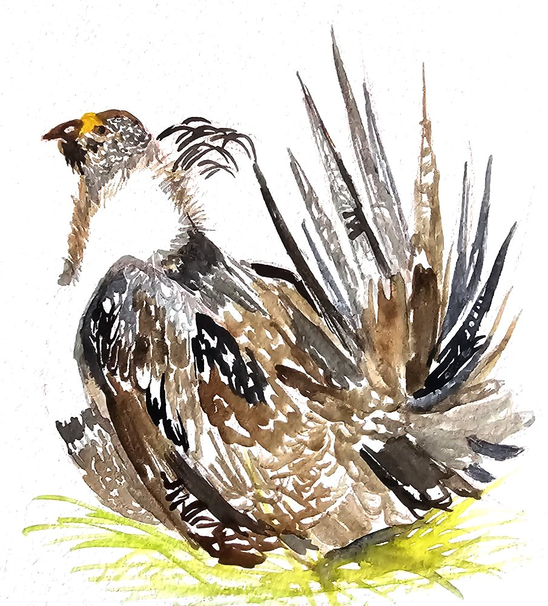

Bird population trends in North America
A data story
Nearly 3 billion birds have disappeared from North America in the last 50 years. I stumbled upon this number by accident. It exists in government reports and datasets, but most of it is text. Without something to anchor it, a number that big is easy to scroll past.
This data story was built to make it harder to look away.
Read the storyChallenge
Finding the human scale inside the data.
Most people don't have a relationship with "geese and swans" as a category. But they do have a relationship with the Canada goose. Everyone has a parking lot story.
Each bird illustration in the story serves as an entry point into its data group. Painted by hand, not sourced. The goal was to make the data feel like it was worth someone's time to paint. Because it was.
The second challenge was format. The risk wasn't just that the data was complex. It was that presenting it as text would repeat the exact problem this project set out to fix.
Results
One metric to hold the whole story.
The dataset covered decades of survey data across multiple ecological categories. The key to making it tellable was finding one metric that could hold the whole story: percentage change from 1970 to 2022, applied consistently across every bird group.
That single anchor made it possible to move a general audience through complex, multi-category data without losing them. Every section asks the same question. The numbers change.
Design decisions
Watercolor illustrations
The illustrations were painted by hand to evoke something a stock image can't: a sense of wonder for the subject, and a quiet reminder of how fragile these species are.

Scrollytelling
Data presented all at once is easy to ignore. Scrollytelling was used to let readers move through the story at their own pace, revealing one bird group at a time.
The format puts the reader in control of the narrative, which makes the information feel discovered rather than delivered.
Interactive graphics
The tipping point section uses a customized Flourish graphic with a watercolor background to stay visually consistent with the rest of the story.
Static tables can show the same data. An interactive graphic lets readers explore it, hovering over individual species to understand where each one sits on the spectrum of decline.
.png)
Reflections
Reflections and next steps.
This project sits at the intersection of design, development, data journalism, and illustration. Building it alone meant making decisions across all four disciplines, often at the same time. That overlap was the most valuable part.
It deepened my appreciation for how much each of those roles depends on the others. A well-cleaned dataset means nothing without a narrative to carry it. A beautiful illustration means nothing if the data it represents isn't legible. Every decision fed every other decision.
I'm currently working to make the project fully mobile responsive. The scrollytelling layout and D3.js visualizations perform well on desktop, but smaller screens require adjustments to scaling, text size, and scroll behavior to keep the experience smooth and readable. In the future, I'd also like to optimize performance by simplifying transitions and reducing file size for faster loading.